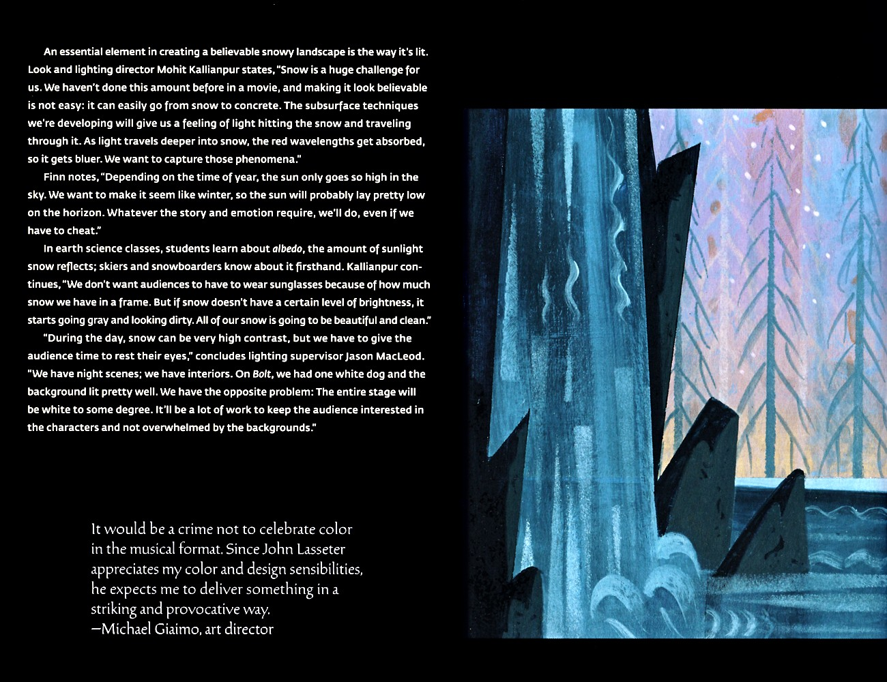
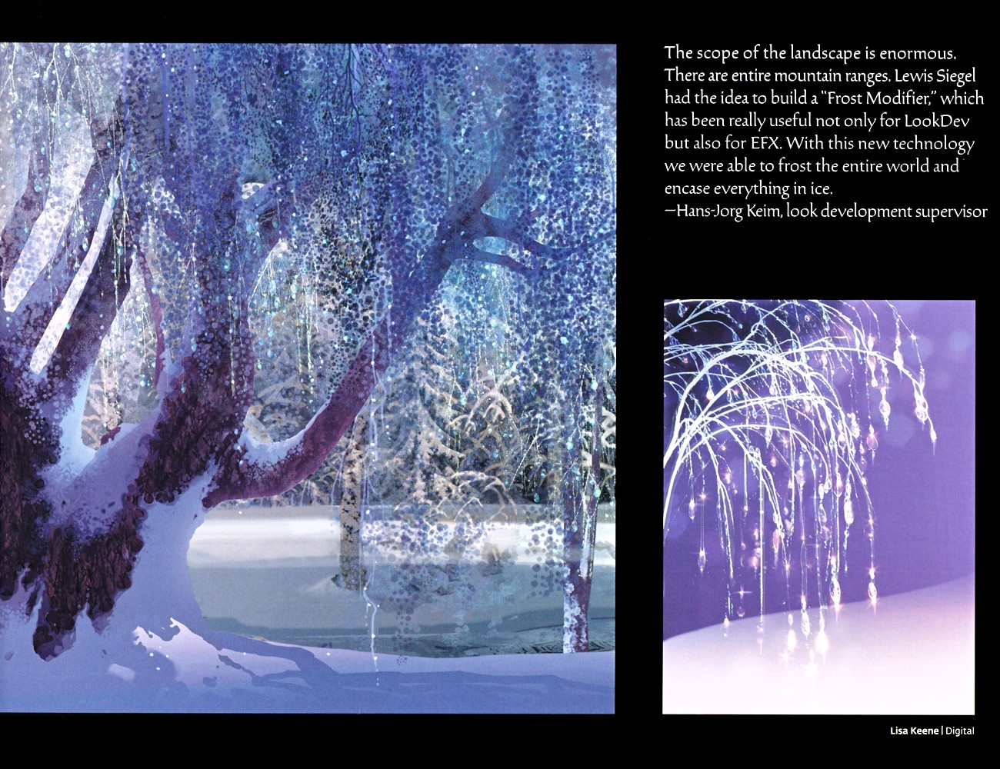
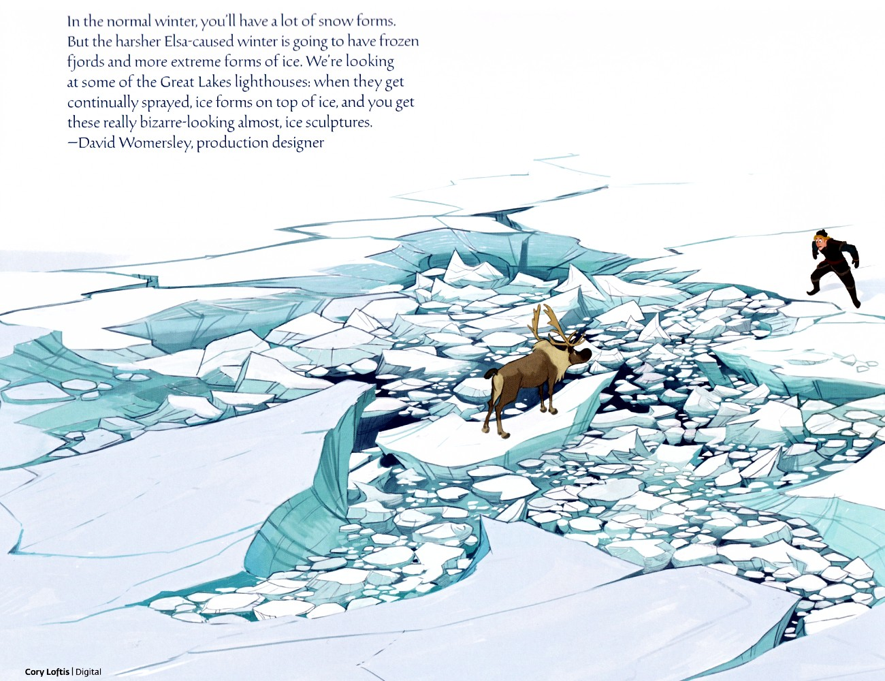
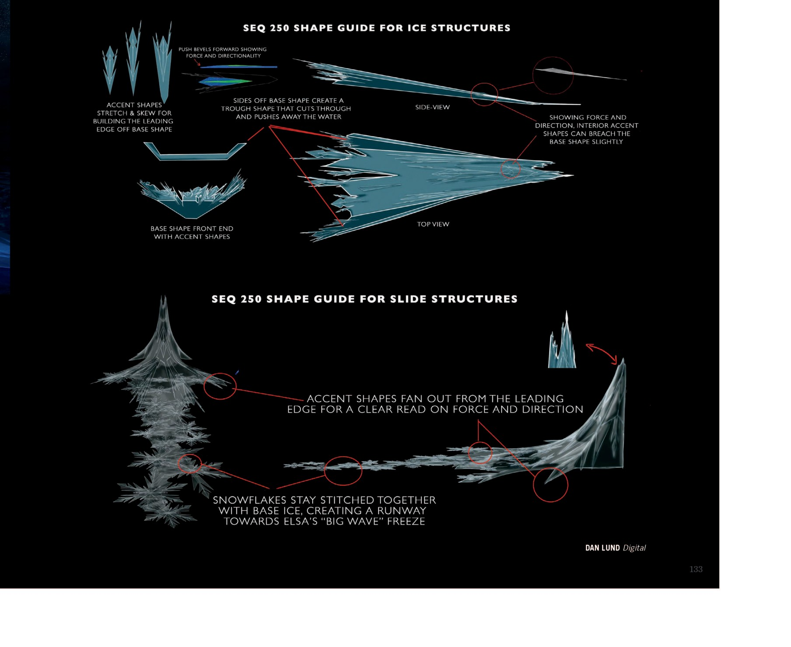
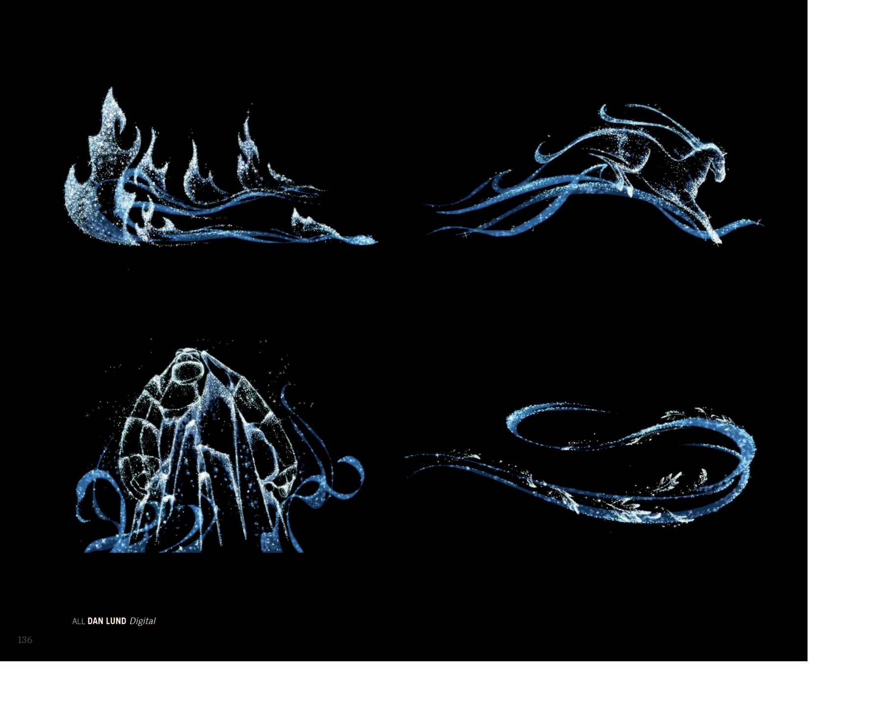
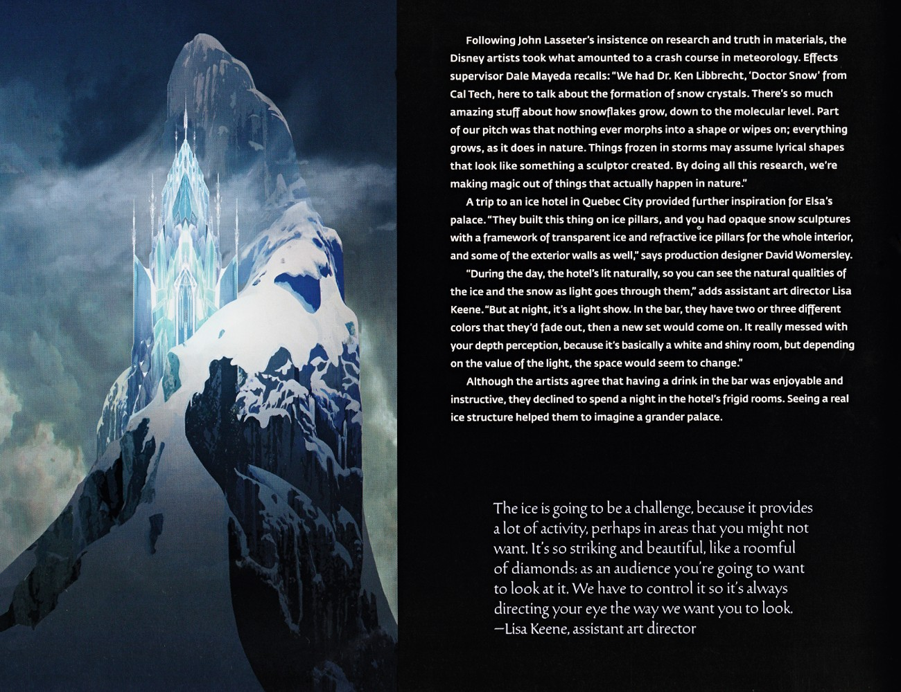
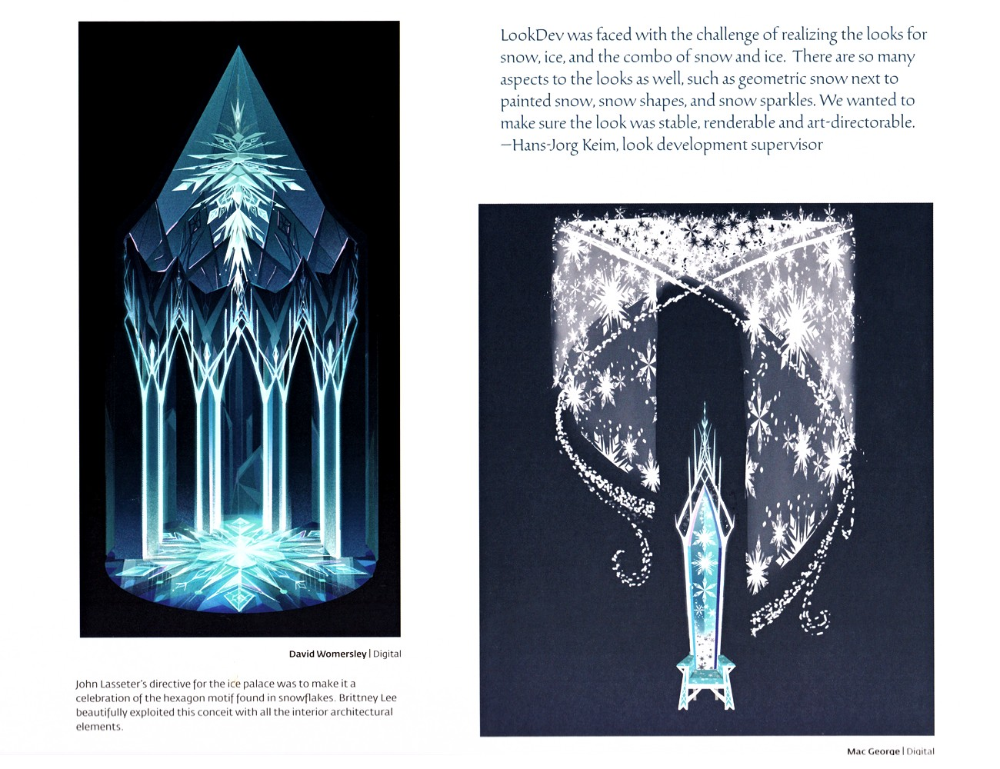

✨ 魔法 · 设定集精选
魔法 · 设定集精选
冰雪魔法的视觉规则：从冰之材质到冰雪王座厅
F1·F2
主电影
中/英
双语
🌀 冰之魔法与视觉特效

冰塔、雪狼与跨组协作
左侧为雪花形积木堆叠、泛蓝光的奇幻冰塔（艾莎与安娜立于塔基），右下方为黑羽绿眼的低伏雪狼。访谈说明本片每个场景都需美术指导与雕刻、几何密度翻倍，并以"Banzai"程序化工具生成树木；特效组前置到 layout 部门、角色经过雪地会留脚印，使各工种协作更紧密。（F1设定集原页）

冰晶簇与雪地光照挑战
右侧为蓝粉色高耸冰晶簇（背景为风格化树影与雪花）。访谈指出雪是巨大挑战——需在"像雪"与"像水泥"之间拿捏，开发次表面散射技术以表现光透雪后偏蓝；冬季太阳光偏低、必要时可"作弊"；要保持雪的洁净明亮以避免发灰；并要在高对比白景中给观众眼睛休息。吉亚伊莫强调音乐形式必须尽情歌颂色彩。（F1设定集原页）

魔法冰冻森林与冰霜修饰器
左侧为深紫蓝背景下泛光的冰封魔林（冰壳树与垂挂冰柱），右下为薰衣草天空下立于雪丘、闪耀水晶丝的柳状树。引言称景观规模宏大（整条山脉），刘易斯·西格尔提出的"Frost Modifier"既能为 LookDev 也能为 EFX 所用，使整个世界观被冰霜包裹、万物封于冰中。（F1设定集原页）

Elsa 寒冬冰形考据与碎冰原野
美术指导 David Womersley 区分两种冬季：普通冬日为大量雪形，而 Elsa 引发的严冬则是冰冻峡湾与更极端的冰形；团队参考五大湖灯塔——持续喷溅使冰上层叠结冰，形成奇异如雕塑的冰景。下方 Cory Loftis 的概念图描绘 Kristoff 奔过广袤碎裂蓝冰原、前景 Sven 困于倾斜冰山之上，正是这种（F1设定集原页）

Elsa's Magic — SEQ 250 形态指南
内部技术文档（SEQ 250 镜头）的形态指南——上半为冰结构：突出斜面表达力与方向；强调形态拉伸/倾斜以构建基形的"前缘"；基形两侧形成凹槽切水推开；后端加强调形态；强调形可稍稍突破基形。下半为滑行结构：强调形从前缘扇出，使力与方向清晰；雪花用基冰粘合，形成一条通向 Elsa"大浪冻结"瞬间的跑道。署名 Dan Lu（F2设定集原页）

Elsa's Magic — 雪花图形变体
无正文段落。展示四款 Elsa 魔法图腾式"装饰雪花"——火苗/冰焰、马形、穹顶（冰宫意象）、水流漩涡——皆由冰晶+拖尾粒子构成。署名 Dan Lund（数字绘）。（F2设定集原页）
🧊 冰雪王座厅

第三章「冰宫」· 冰宫远峰概念图
本页为 David Womersley 的数字绘制，呈现艾莎冰宫坐落于陡峭雪峰顶端、在绿色极光天空下熠熠生辉的远景构图，确立冰宫“孤悬于山巅”的视觉设定。（F1设定集原页）

第三章「冰宫」· 雪山顶冰宫概念图
本页为无署名的水晶尖塔冰宫远景概念图，描绘宫殿自雪峰顶端拔起、尖塔在云天下捕捉光线，呼应 p114 的远峰设定并进一步细化体量。（F1设定集原页）

第三章「冰宫」· 冰宫走廊配色与特效理念
本页左侧红/品红、右侧蓝/青的冰宫走廊双稿（Julia Kalantarova）展示同一空间的两套配色情绪。正文续接 p118 截断的 Dan Lund 引述：用雪絮的正负空间塑造雪花形，并为艾莎设计“签名雪花”作为辨识母题；特效被设计为有起承转合、像在讲一个故事点。Marion West 强调艾莎是从空气中微粒“创造（F1设定集原页）

第三章「冰宫」· 六边母题与冰门设计
David Womersley 绘锥形冰宫由发光青蓝晶面以哥特拱形排布、自放射六边形地面升起，整体呼应雪花几何。LookDev 主管 Hans-Jorg Keim 说明团队需实现雪、冰及雪冰混合的多重外观（几何雪邻绘製雪、雪形与雪闪），并确保稳定、可渲染、可美术指导。Mac George 绘以雪花漩涡框绕、中心为晶钥形（F1设定集原页）

第三章「冰宫」· 暴雪漩涡与魔法生长论述
Mac George 绘两幅“暴雪”图：其一为艾莎背对如海啸般升起的雪花巨涡；其二为艾莎居于由雪花与微粒构成的螺旋隧道中心，呈单色白灰的催眠式效果。Cory Loftis 说明团队在开拍前长时间研究雪花，艾莎的魔法冰沿用雪花图案但尺度更大，生长方式“更不混乱、更具旋律或节奏感”。（F1设定集原页）

第三章「冰宫」· 冰座与梦境冰室
Lisa Keene 绘艾莎威坐于广阔神秘冰穴中的冰座，周遭高耸冰形、飘雪与蓝绿灵光映于冰地；艺术指导 Michael Giaimo 重申拉塞特“以六边形母题庆祝雪花”的指令，并称 Brittney Lee 将其贯彻于所有内部建筑元素。末图为梦境般冰室：纤长冰柱、垂冰、多烛冰吊灯，右下方似为冰钢琴/竖琴，皆浴于深蓝。（F1设定集原页）

对称雪花水晶母题
画面为一片高度精细、严格对称的雪花，以半透明蓝白水晶的质感刻画于纯黑背景中，凸显冰雪的几何秩序与冷冽之美。作为贯穿全片的雪花符号母题，此页可视作冰雪视觉语言的收束或装饰性题图。（F1设定集原页）
💡 图注说明
本页全部图版来自《The Art of Frozen》与《The Art of Frozen II》官方设定集原书扫描，图注经原书逐页笔记核对。
📌 本页要点
本页核心要点：①🌀 冰之魔法与视觉特效；②🧊 冰雪王座厅。来源：电影正典、官方设定集与官方小说综合梳理。